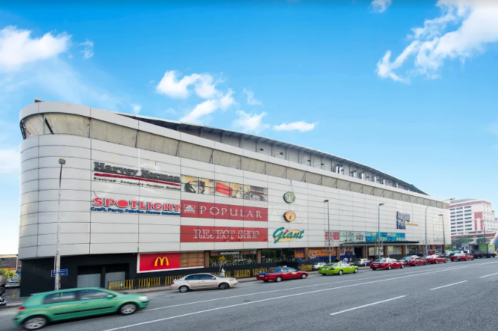

HAPPY SUSHI SHOP
Our Locations

Happy Sushi Cheras Leisure Mall
Lot lG-18, Lower Ground Floo Jalan Manis 6,
Taman Segar, Cheras,
56100 Kuala Lumpur
Operation Hour:11.00 am - 10.00 pm

Happy Sushi Berjaya Times Square
Berjaya Times Square 05-106A,
5th Floor No.1, Jalan Imbi,
55100 Kuala Lumpur.
Operation Hour: 11.00 am - 10.00 pm

Happy Sushi Suria KLCC
Suria KLCC Shopping Center Unit 16, Level 2,
Signature Food Court Jalan Pinang,
50450 Kuala Lumpur
Operation Hour: 10.00 am - 10.00 pm

Happy Sushi Avenue K
L2-11, Level 2,
Avenue K,156 Jalan Ampang,
50450 Kuala Lumpur
Operation hours:10.00 am - 10.00 pm (weekdays)
9.00 am - 10.00 pm (weekends)

Happy Sushi Sunway Putra Mall
Lot LG-19 , Lower Ground Floor,
Sunway Putra Mall,100,
Jalan Putra, 40350 Kuala Lumpur
Operations hours;11.00 am - 10.00 pm (Mon - Thu)
10.00 am - 10.00 pm (Fri - Sun)

Happy Sushi The Mines
Mines Shopping Fair Lot L1-FM1, Level 1,
Jalan Dualng, Mines Resort City
43300 Seri Kembangan, Selangor
Operation Hour: 10.00 am - 10.00 pm

Happy Sushi Ampang Point
Ampang Point
13, Ground Floor, Jalan Memanda 5
68000 Ampang, Selangor.
Operation Hour: 10.00 am - 10.00 pm

Happy Sushi 1 Utama
One Utama Shopping Centre LG322, Lower Ground,
No.1 Lebuh Bandar Utama, Bandar Utama City Centre,
47800 Petaling Jaya, Selangor
Operations Hours: 10.00 am - 10.00 pm

Happy Sushi Sunway Pyramid
Sunway Pyramid
Lot LG1.42,
No. 3, Jalan PJS 11/15
Bandar Sunway
46150 Petaling Jaya, Selangor
Operation Hours: 10.00 am - 10.00 pm

Happy Sushi 1st Avenue
1st Avenue
Lot LG-71, Lower Ground Floor
1st Avenue Mall, 182 Jalan Magazine
10300, Pulau Pinang
Operations Hours: 10.00 am - 10.00 pm

Happy Sushi Prangin Mall
Prangin Mall – Komtar
33-G-38 Ground Floor
Jalan Dr. Lim Chwee Leong
10100 George Town, Penang
Operation Hours: 11.30 am - 10.00 pm

Happy Sushi Queensbay Mall
Queensbay Mall
LG-93, 100, Persiaran Bayan Indah
11900 Bayan Lepas, Penang
Operation Hours:10.30 am – 10.30 pm

Happy Sushi Gurney Plaza
Plaza Gurney
Lot 170-02-58
Persiaran Gurney 10250
Pulau Pinang
Operation Hours:10.00 am – 10.00 pm

Happy Sushi Mahkota Parade
Mahkota Parade
Lot F19A, First Floor
No. 1, Jalan Merdeka,
75000 Melaka
Operation Hours:10.00 am – 10.00 pm

Happy Sushi City Square Mall
Lot MB-01,
Basement Level 1,106 & 108,
Jalan Wong Ah Fook
80000 Johor Bahru, Johor
Operation Hours:10.00 am – 10.00 pm
Happy Sushi KSL City
LG49, 50 & 51, Lower Ground,
KSL City, No.33 Jalan Seladang
80250, Johor Bahru, Johor
Operation Hours:10.00 am – 10.00 pm

Happy Sushi Sutera Mall
Lot L3-051 & L3-051a , Level 3, Sutera Mall,
(East Wing), No. 1, Jalan Sutera Tanjung 8/4,
Taman Sutera Utama, 81300 Skudai, Johor Bahru
Operation Hours:10.30 am – 10.00 pm